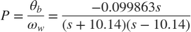
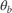
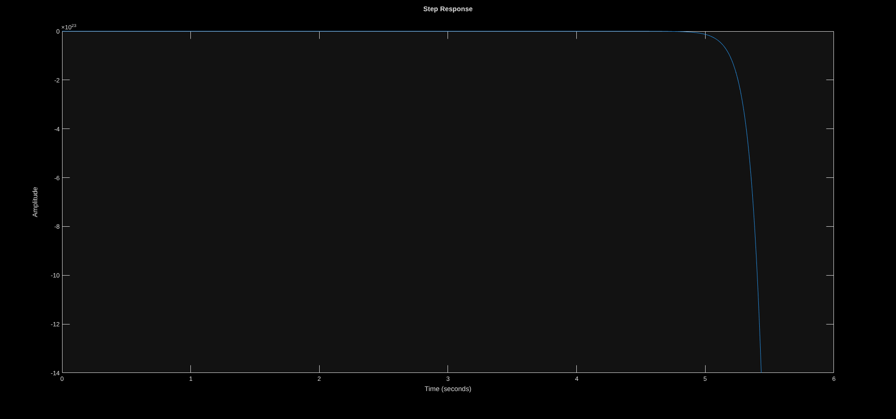
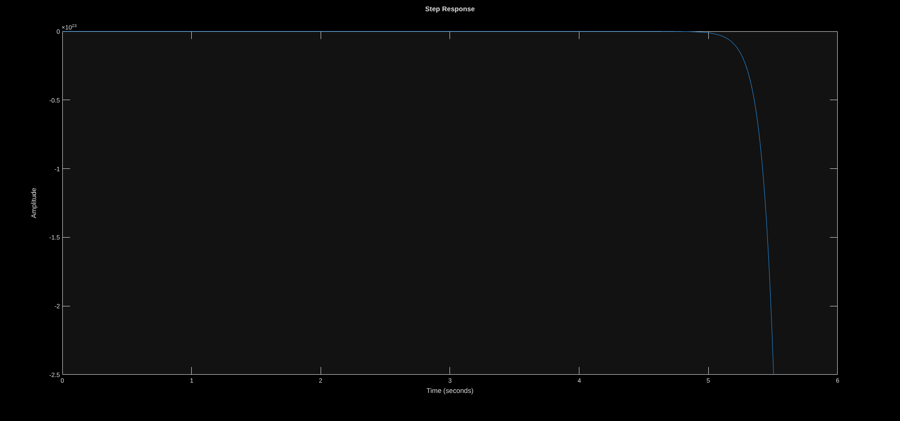

Practica 8 - Control PID
Laboratorio de Control Automatico [86.22]
Contents
Considerando el siguiente modelo:

donde

es el angulo del cuerpo del Balancio y \omega_w la velocidad de las ruedas, en radianes, y radianes por segundo, respectivamente. Los limites de actuacion de las ruedas son de 3 revoluciones por segundo.Punto 1
Diseñar un controlador continuo tipo PID (sin regularizar), con la unica condicion que estabilice la planta sin saturar el controlador, idealmente con la menor accion de control posible. Suponga que las condiciones iniciales del sistema son todas nulas, excepto por el angulo de inclinacion el cual comienza en alrededor de 4° o 5°.
s = tf('s'); P = - .099863 *s /(s + 10.14) /(s - 10.14) % kp = 0.001; % % ki = 0; % kd = 0; % C = pid(kp,ki,kd);
P = -0.09986 s ----------- s^2 - 102.8 Continuous-time transfer function.
C = (s + 1) *(s + .01) /s T = feedback(P*C,1); omega = feedback(P,C); figure(); step(T); figure(); step(omega) zpk(T)
C =
s^2 + 1.01 s + 0.01
-------------------
s
Continuous-time transfer function.
ans =
-0.11094 s (s+1) (s+0.01)
-------------------------
s (s-10.74) (s+10.63)
Continuous-time zero/pole/gain model.

